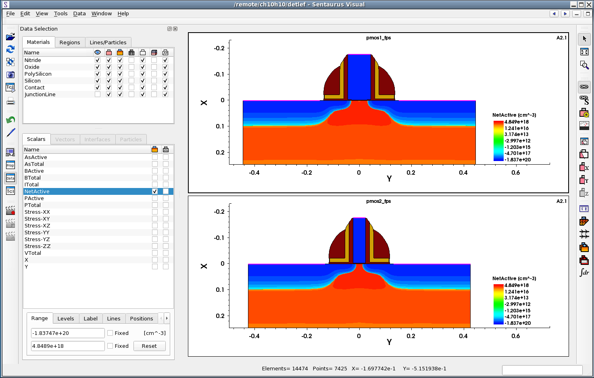

Sentaurus Visual
5. Inspecting the Structure
5.1 Overview
5.2 Probe Tool
5.3 Cutlines and Cutplanes
5.4 Plot Overlay
Objectives
- To examine results and sample data in Sentaurus Visual.
5.1 Overview
Sentaurus Visual provides functions to probe into the device structure for values of the existing physical quantities. It also provides tools that facilitate making cutlines and cutplanes through the structure to obtain data values. This section discusses the use of these tools.
5.2 Probe Tool
After a device structure has been loaded into Sentaurus Visual, the values of the data fields existing on the structure can be sampled at each point of the structure using the probe tool.
To probe a point:
- Click the Probe toolbar button
to activate the function.
The cursor changes to a cross. The Probe panel opens. - Click the device structure at the point of interest.
The probe tool makes a cross to indicate the location of the data sampling point, and the information on the data field values at the sampled point are displayed in the Probe panel (see Figure 1).
Figure 1. Probe panel.
The Probe panel displays all of the available information about the selected point. At the top, it shows the point coordinates: x, y, and z. The Var Values tab shows the field values at the point. The Cell Info and Face Neighbor tabs show information about the finite-element composition and its neighbors.
To probe the field value at the mesh point, select the Snap to Mesh option, or hold the Ctrl key while you click the structure for data sampling.
To probe at an exact coordinate, click the Probe At button on the Probe panel. A dialog box opens where you can enter the coordinates of the point of interest (see Figure 2).
Figure 2. Probe At dialog box where you can enter exact point coordinates.
5.3 Cutlines and Cutplanes
This section describes how to generate 1D and 2D cuts. In Sentaurus Visual, you can create a 1D cutline from 2D or 3D structures. Cutlines and cutplanes can be formed orthogonally to one of the Cartesian axes or can be created in an arbitrary direction. Cutlines and cutplanes can be moved and the cut plot is updated automatically. Sentaurus Visual provides the following tools for generating cutlines and cutplanes.
| Button | Description |
|---|---|
| Displays the Cutlines and Cutplanes dialog box to generate non-orthogonal cutlines or cutplanes directly from a 3D plot. It allows you to specify the exact position of the cut. | |
| Creates a cutline on a 2D plot in a custom direction. | |
| Creates an orthogonal cut to one of the Cartesian axes. The result is a 2D plot of the cutplane if cutting a 3D plot, or an xy plot from a cutline on a 2D plot. |
5.3.1 Axis-Aligned Cutline
On a 2D plot, an axis-aligned cut can be made along the x- or y-coordinate axis. To illustrate this, instructions are given for making a horizontal cut on two linked structures:
Download the following two files by right-clicking and choosing Save Target As:
- Load the two PMOS structures pmos1_fps.tdr and pmos2_fps.tdr.
- If the Auto Link option is selected in user preferences, the two structures will be linked automatically upon loading. The number A2 should be displayed in the upper-right corner of each plot indicating that plots are linked and belong to group 1.
- If the Auto Link option is not selected, link the structures
manually. Select both structures by holding the Shift key while clicking both
structures. A thick border should highlight both plots. Click the Link button
.
The number 1 should be displayed in the upper-right corner of
each plot, indicating that plots are linked and belong to the same group (see Figure 3).
Figure 3. Two linked plots before cut. (Click image for full-size view.)
- Click to make a cutline perpendicular to the x-axis. The cursor changes to a cross. Click a point on the structure where the cut is to be made. Sentaurus Visual opens a new xy plot showing the value of the selected field along the cut direction.
- The cutline is displayed as a dashed line on the 2D plot. Note the cutline
label and the two cutline handles (small circles) at both ends of the line (see Figure 4).
The cutline can be moved by dragging the cutline handle. If the cutline is moved, the
xy plot is updated automatically, reflecting the new position of the cutline. To set a
precise position of the cut, click one of the handles. The Cutline Properties panel opens.
Exact coordinates of the cutline can be specified on the Position/Size tab
(see Figure 5).

Figure 4. Cutline location and label shown on linked 2D plot.
Figure 5. Cutline Properties panel.
- To enhance the view of the newly created xy plot, minimize both 2D structures.
Select the pmos1_fps structure, and choose Window > Minimize Plot or click .
Repeat for the pmos2_fps structure. - To switch the y-axis scale to logarithmic, click the button.
{kind=link}
Figure 6 shows the final xy plot comparing two NetActive concentrations along the cutlines.
Figure 6. An xy plot of the NetActive field after cutting two linked structures.
5.3.2 Band Diagram Along Cutline
Sentaurus Visual allows you to conveniently plot the band diagram, which shows the electron energy of the conduction and valence band edges versus a spatial dimension.
Open the following TDR file, which contains results from Sentaurus Device: nmos_des.tdr.
The band diagram can only be plotted for a 1D dataset that is typically created by making a cutline (see Section 5.3.1 Axis-Aligned Cutline). After making a cutline, a new xy plot is created.
To create a band diagram, select an xy plot, and click the toolbar button.
The dataset must have the following variables defined (variable names are italicized):
- Conduction band energy (ConductionBandEnergy)
- Valence band energy (ValenceBandEnergy)
- Electron quasi-Fermi energy (eQuasiFermiEnergy), or electron quasi-Fermi potential (eQuasiFermiPotential), but not both in the same dataset
- Hole quasi-Fermi energy (hQuasiFermiEnergy), or hole quasi-Fermi potential (hQuasiFermiPotential), but not both in the same dataset
A confirmation dialog box opens to warn you that all existing curves on the selected xy plot will be removed. Click OK. The band diagram will be displayed (see Figure 7).
Figure 7. Band diagram.
You can also plot the band diagram using Sentaurus Visual commands. See Section 5.2 Sentaurus Visual: Plotting Band Diagram for an example of plotting the band diagram using Sentaurus Visual Python commands.
5.3.3 Cutplane
To follow this section, download the following file by right-clicking and choosing Save Target As: finfet_des.tdr.
A cutplane can be made on a 3D structure. To specify a cutplane, Sentaurus Visual needs the orientation of the plane and the point that belongs to the plane. For convenience, two types of cutplane with two different interfaces are supported in Sentaurus Visual: cutplanes orthogonal to the coordinate axis and cutplanes in a custom direction.
The three orthogonal cutplanes have dedicated toolbar buttons: , , .
To make a cut orthogonal to the x-axis, click . The cursor changes to a cross. Click a point on the structure to make a cutplane at that point. A new 2D plot is created in a new frame, and the cutplane position is marked on the original 3D structure with a gray transparent plane and label (see Figure 8). Clicking anywhere on the plane opens the Cutplane Properties panel, where the cut position and label properties can be edited. Changing the plane position automatically updates the 2D cut plot.

Figure 8. Cutplane on 3D plot and 2D structure produced from cut. (Click image for full-size view.)
Note that cuts orthogonal to the coordinate axis also can be made in the Cutlines and Cutplanes dialog box, accessible by clicking .
5.4 Plot Overlay
The plot overlay function provides an intuitive way of comparing simulation results from two or more structures. It allows you to quickly identify differences in structure topology, mesh, junction location, or data fields by plotting one structure on top of another.
In this section, instructions are presented to compare the boundary and junction of two PMOS structures. To compare halo profiles, you will plot arsenic concentration profiles using contour lines.
To follow this exercise, download the following two files by right-clicking and choosing Save Target As:
- Select both structures by holding the Shift key while clicking both structures. To select all structures, use the shortcut keys Ctrl+A.
- Click .
- A new frame with two plots overlaid on top of each other is displayed. Note that
the Data Selection panel looks different (see Figure 9). At the top, the
Materials tab displays two sets of materials, one for each dataset.
The Scalars tab displays two lists of data fields one for each dataset.
Figure 9. Data Selection panel for overlaid plots. (Click image for full-size view.)
- Comparing the structure topology is easier if only the boundaries are shown. Hide all regions except Silicon and hide fields in all materials except Silicon.
- Change the boundary color for both structures. On the Materials tab of the Data Selection panel, double-click the name of the pmos1_fps dataset, select red from the list of colors, and press the Enter key. The black square next to pmos1_fps changes to red. All boundaries for the first structure are now displayed in red. In a similar way, change the boundary color of the second structure to blue.
- To compare data fields, you will plot them with contour lines. First, change the color of the contour lines. To plot the field with red contour lines, on the Scalars tab, double-click the name of the pmos1_fps dataset. Then, select red from the list of colors and press the Enter key. In a similar way, change the color of the contour lines for the second structure to blue.
- For both datasets, on the Scalars tab, clear the check box next to the NetActive field, and select plotting of AsActive contour lines by selecting the check box in the second column.
- To change the range, highlight the AsActive field for the pmos1_fps
dataset and, on the Range tab, enter the range from 5e17 to 7e18. Click the
Levels tab and enter 14 levels. Do the same for the pmos2_fps
dataset. Figure 10 shows the Data Selection panel after modifications.
Figure 10. Data Selection panel after modifications. (Click image for full-size view.)
- Zoom into the channel area.
{kind=link}
{kind=link}
Figure 11 shows the overlaid plots. The color associated with the structure changes the color of both the region boundary and the mesh.
{kind=link}
Figure 11. Overlaid plots. (Click image for full-size view.)
Copyright © 2022 Synopsys, Inc. All rights reserved.